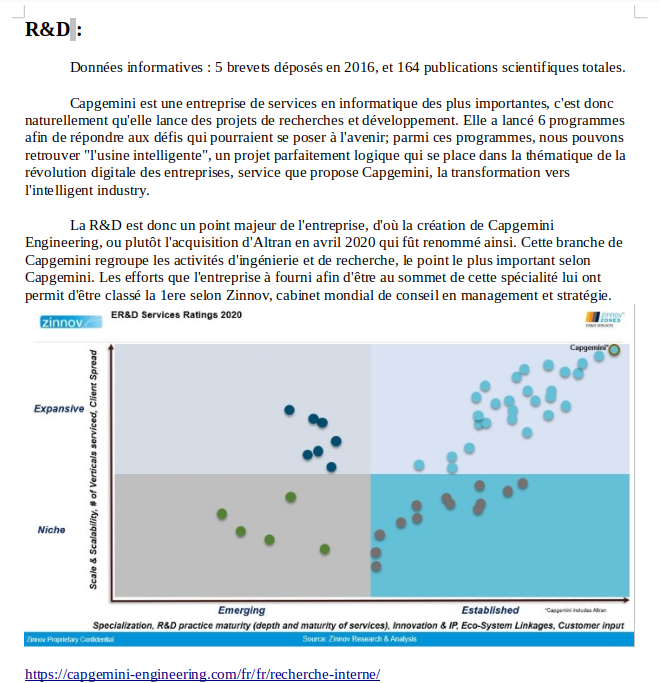

Retexp : projet gestion : analyse d'entreprise
Cahier des charges :
- Présentation de l'entreprise de manière générale puis détaillée.
- Réaliser le diagnostic interne de l'entreprise : analyse des fonctions de l'entreprise, de ses dynamiques intérieures.
- Réaliser le diagnostic externe de l'entreprise : analyse PESTE(L) et Michael Porter (les 5 forces concurrentielles de Porter).
- Suivre l'avancement du projet de groupe via un Gantt.

Outils utilisés :
- Google docs (mise à jour en temps direct de l'avancement des membres de l'équipe sur leur travail respectif).
- Tableau excel paramétré pour utiliser un diagramme de gantt.
- (Outils immatériels : PESTEL et les 5 forces de Porter).
Compétences aquises :
- Travail en équipe, suivre l'avancement du projet.
- Application directe des connaissances de cours en situation réaliste sur une entreprise existante.
- Savoir trier des informations provenant de différentes sources, tenir une bibliographie.